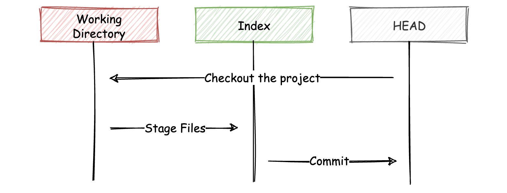
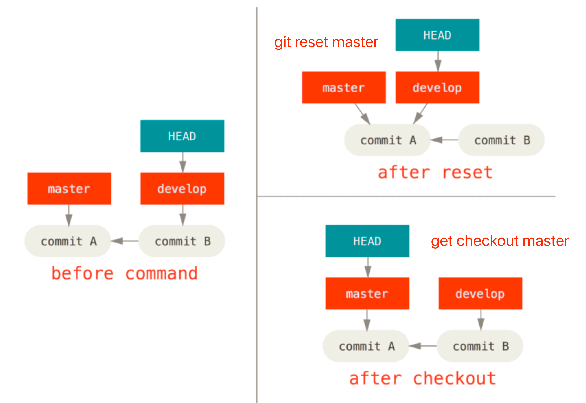

《Pro Git - 2nd Edition》读书笔记（第 7-10 章）
书接上回。
七、Git 工具
- Page 200选择修订版本：
git log --abbrev-commit --pretty=oneline # 以缩略形式查看提交记录；
git show <commit-id> # 查看某个 <commit-id> 对应的提交详情；
git show <branch> # 查看 <branch> 分支最近一次提交的详情；
git reflog # 查看历史上 HEAD 所指向的提交，每一次 HEAD 发生变化时都会被记录；
git show <branch>@{n} # 查看 <branch> 分支在第 n 次前的提交；
git log --left-right <branch-A>...<branch-B> # 查看 <branch-A> 与 <branch-B> 包含，但又不被两者同时包含的提交；
- reflog 引用日志仅对自己的本地仓库有效（可类比于 Shell 历史记录）；
- 可以用 “HEAD^” 来指代该引用的上一个提交，即 “HEAD 的父提交”。而 “HEAD^2” 则指代 “HEAD 的第二父提交”；“HEAD~” 与 “HEAD^“ 等价，而 “HEAD~2” 则指代 “HEAD 的祖父提交”，即 “HEAD^^”；
- Page 208交互式暂存：
git add -i # 以“交互模式”来暂存变更；
git add -p/--patch # 部分暂存；
- Page 212储藏与清理：
git stash
git stash list
git stash pop [--index]
git stash apply stash@{n} [--index]
git stash drop stash@{n}
git stash -u
git stash --keep-index # 不储藏已暂存的变更；
git stash --patch # 交互式地提示哪些改动想要储藏；
git stash branch <branch> # 以最近一次的的储藏记录创建一个新的分支；
git clean -d -f # 移除所有未被追踪的文件；
git clean -d -n # 预测将被移除的文件（dry-run）；
git clean -i
- 为
git stash pop与git stash apply添加 “–index” 可以恢复之前已暂存的变更（默认恢复为未暂存的状态）；
- Page 217GPG 签署工作：
（略）
- Page 222搜索：
- Git 文件内容搜索：
git grep -n <keyword> # 查找工作目录中文件包含关键字 <keyword> 的行，并输出行号；
git grep --count <keyword> # 输出搜索的统计性信息；
git grep -p <keyword> # 搜索并输出匹配的所在函数（方法）；
git grep [options] <keyword> <branch/tag>
- Git 日志搜索：
git log -S <keyword> --oneline # 查找变更了关键字 <keyword> 的提交；
git log -L :<funcname>:<file> # 查看 <file> 文件中 <funcname> 的每一次变更（仅适用于函数）；
- Page 225重写历史：
git commit --amend # 修改最后一次提交（会直接带走暂存区的改动）；
git rebase -i HEAD~{n} # 修改最后 n 次提交（压缩、拆分、修改、移除等）；
git filter-branch --tree-filter '<command>' HEAD --all # 在所有分支的检出项目的每一个提交后运行指定的命令，然后重新提交结果；
- Page 231重置揭密：
git cat-file -p HEAD # 查看 HEAD 快照的信息；
git ls-tree -r HEAD # 查看 HEAD 快照的目录列表，及文件的 SHA-1 校验和；
git ls-files -s # 显示当前索引区的状态；
git reset --soft HEAD~
git reset --mixed HEAD~ # 默认情况（撤销提交，并同时取消暂存）；
git reset --hard HEAD~ # 更进一步，同时清理工作区的变更；
git reset HEAD <file> # 将索引中特定文件的内容恢复为 HEAD；
git reset <commit-id> <file> # 从对应某次提交中恢复某个文件（默认是 --mixed）；
- Git 的“三棵树”：HEAD（上一次提交的快照，下一次提交的父节点）、index（预期的下一次提交快照）以及 Woring Directory（沙盒）。其中，前两者的内容被存储在 “.git” 文件夹内，工作目录会将它们解包为实际的文件以便编辑；

git commit在执行时会取得索引（index）中的内容并将它保存为一个永久的快照，然后创建一个指向该快照的提交对象，最后更新当前分支所来指向本次提交；git reflog可用于找回曾经的丢失的 HEAD；git reset命令会以特定的顺序重写这“三棵树”，在指定以下选项时停止:- 移动 HEAD 分支的指向（若指定了 –soft，则到此停止）；
- 使索引（index）看起来像 HEAD（默认情况，则到此停止）；
- 使工作目录（Working Directory）看起来像索引（若指定了 –hard）；
- 压缩历史：通过
git reset HEAD~~ --soft回退到旧版本，但是当前索引中的改动不会发生变化，此时在通过git commit进行提交即可压缩之前 “HEAD~” 对应的那个提交； git checkout对工作目录是安全的，它会通过检查来确保不会将已更改的文件弄丢。而git reset --hard则会不做检查就全面地替换所有东西。并且，两者更新 HEAD 的方式也不相同：

git reset与git checkout对比（其中 “REF” 表示该命令移动了 HEAD 指向的分支引用，而 “HEAD” 则表示只移动了 HEAD 自身）：
- Page 251高级合并：
git ls-files -u # 显示未合并文件的 Git blob 对象信息；
git merge-file -p <common-file> <their-file> <our-file> # 合并三方文件；
git config --global merge.conflictstyle diff3 # 合并冲突时显示 base 版本的内容；
git checkout --conflict=diff3 <file> # 重新检出文件，并使用 diff3 的冲突标记；
git log --left-right --merge -p HEAD...MERGE_HEAD # 显示冲突文件的区别；
git checkout --ours(--theirs) .
git merge -Xours(-Xtheirs) <branch> # 合并时直接选择一边；
git revert HEAD~1 # 还原上一个提交；
git revert <start-commit>..<end-commit>
- 三方合并的三个版本：Git 在索引中存储了所有这些版本，在 “stages” 下每一个都有一个数字与它们关联。“stage 1” 是它们共同的祖先版本，“stage 2” 是你的版本（当前分支），“stage 3” 来自于 MERGE_HEAD，即你将要合并入的版本（“theirs”）;
- 撤销合并：
- 修复引用：
git reset HEAD~ --hard（会重写历史）； - 还原提交：
git revert -m 1 HEAD，创建一个新提交，在该提交中撤销来自其他分支的变更。其中 “-m 1” 表示保留当前分支对应的父节点变更（在分叉点需指定）。在后续再次合并该分支时，还需要将前次撤销再还原掉（因此当前分支历史变更中已经存在被合并分支的变更）；
- 修复引用：
- 假合并：
git merge -s ours(theirs) <branch>，在合并时直接选取一边（ours/theirs），并“欺骗” Git 当前分支已合并过； - 子树合并：
git read-tree。有两个项目，并且其中一个映射到另一个项目的一个子目录，或者反过来也行。当你执行一个子树合并时，Git 通常可以自动计算出其中一个是另外一个的子树从而实现正确的合并（不同于“子模块”）。
- Page 269Rerere（Reuse Recorded Resolution）：允许你让 Git 记住解决一个块冲突的方法，这样在下一次看到相同冲突时，Git 可以为你自动地解决它。如果做了很多次重新合并，或者想要一个特性分支始终与你的 master 分支保持最新但却不想要一大堆合并，或者经常变基，打开 rerere 功能可以帮助你的生活变得更美好。
git config --global rerere.enabled true # 启用 Rerere；
- Page 275使用 Git 调试：
# 查找第一个出现问题的提交；
git bisect start
git bisect bad # 标记当前为“坏”提交；
git bisect good <commit-id> # 标记已知的“好”提交的所在位置；
# ...（重复多次，进行定位）
git bisect reset # 重置 HEAD，完成查找；
# 使用自动化脚本查找失败的提交；
git bisect start <bad-commit> <good-commit> # 指定查找范围；
git bisect run <script> # 运行脚本（正常返回 0，否则非 0）使用二分法查找；
# 展示文件中每一行最后一次修改的提交；
git blame -C -L 1,2 <file>
- 一般调试流程：先用
git bisect找到第一次出现的“坏”提交，然后再使用git blame来查找产生“坏”变更的具体人员信息。
- Page 278子模块：可以将一个 Git 仓库作为另一个 Git 仓库的子目录，同时还保持两者提交的独立。
git submodule add <upstream> # 添加子模块；
git clone --recursive <upstream> # 自动初始化并更新仓库中的子模块；
git submodule update --remote <submodule-name> # 让 Git 自动进入子模块并抓取更新（默认为 master 分支）；
git diff --submodule # 查看子模块的更新差异；
git submodule update --remote --merge(--rebase) # 让 Git 自动进入子模块，并直接合并上游变更到本地（非游离状态）；
git push --recurse-submodules=check # 在推送主仓库变更时，检查子模块改动是否已经被推送，若否则终止推送；
git rev-parse HEAD # 获得 HEAD 对应的提交 ID；
git submodule foreach <command> # 在每一个子模块中执行命令；
- 子模块会添加信息到项目中的 “.gitmodules” 文件内；
- 子模块会以 “160000” 模式（将一次提交记作一项目录，而非一个子目录或者一个文件）进行提交；
- 当通过
git submodule update从子模块仓库中抓取修改时，Git将会获得这些改动并更新子目录中的文件，但是会将子仓库留在一个称作 “Detached HEAD” 的状态，即“没有本地工作分支跟踪改动”的状态。
- Page 297打包：通过“打包文件”的方式将一个仓库的完整构建信息传统给他人使用。
# 创建一个当前仓库的打包文件，并打包引用 HEAD，以及 <branch> 分支；
git bundle create <bundle-name> HEAD <branch>
# 打包一部分变更；
git bundle create <bundle-name> <branch> <commit-range>
# 检查是否是一个合法的 Git 包，是否拥有共同的祖先来导入；
git bundle verify <bundle-name>
# 查看可导入的分支有哪些；
git bundle list-heads <bundle-name>
# 基于打包文件克隆一个项目；
git clone <bundle-name> <repo-name>
# 从打包文件中导入变更记录到 <import-branch>；
git fetch <bundle-name> <branch>:<import-branch>
- Page 301替换：用其他对象假装替换数据库中的 Git 对象，在连接不同仓库中的历史变更时很有用。
git replace <old-commit> <new-commit>
- Page 309凭证存储：
# 设置凭证存储方式（cache、store、osxkeychain 等等）；
git config --global credential.helper cache --timeout <seconds>
git config --global credential.helper store --file <path>
- 默认所有都不缓存，每一次连接都会询问你的用户名和密码；
- “cache” 模式会将凭证存放在内存中一段时间。密码永远不会被存储在磁盘中，并且在15分钟后从内存中清除；
- “store” 模式会将凭证用明文的形式存放在磁盘中，并且永不过期。这意味着除非你修改了你在 Git 服务器上的密码，否则你永远不需要再次输入你的凭证信息。这种方式的缺点是你的密码是用明文的方式存放在你的 home 目录下；
- Git 还有一种 “osxkeychain” 模式，它会将凭证缓存到你系统用户的钥匙串中。这种方式将凭证存放在磁盘中，并且永不过期，但是是被加密的，这种加密方式与存放 HTTPS 凭证以及 Safari 的自动填写是相同的。
八、自定义 Git
- Page 315得到当前版本的 Git 支持选项列表：
man git-config
常用配置项：
- core.editor：Git 使用的文本编辑器；
- commit.template：提交时使用的默认信息模板；
- core.pager：指定 Git 运行诸如
git log和git diff等命令所使用的分页器（默认是 “less”）； - user.signingkey：设置 GPG Key；
- core.excludesfile：设置全局生效的 .gitignore 文件；
- help.autocorrect：设置在打错命令时的处理方式（仅提示、模糊匹配自动运行）；
- color.ui：是否开启自动着色；
- merge.tool：设置合并工具；
- core.autocrlf：在提交时自动把回车和换行转换成换行（主要用于 Windows 系统）；
- core.whitespace：探测和修正多余空白字符问题；
- Page 325Git 属性：基于路径的设置项（.gitattributes / .git/info/attributes）。可以对项目中的文件或目录单独定义不同的合并策略，让 Git 知道怎样比较非文本文件，或者让 Git 在提交或检出前过滤内容等。
# .gitattributes
*.pbxproj binary
- Page 328Git 过滤器：可以用来实现文件提交或检出时的关键字替换（比如“提交时移除敏感信息”）。一个过滤器由 “clean”（文件被暂存时触发）和 “smudge”（文件被检出时触发）两个子过滤器组成。
# .gitattributes
*.c filter=indent
git config --global filter.indent.clean indent
git config --global filter.indent.smudge cat
- Page 333Git 钩子：钩子都被存储在 Git 目录下的 hooks 子目录中。也即绝大部分项目中的 “.git/hooks”（移除示例文件后缀的 “.sample” 即可启用）。
九、Git 与其他系统
（略）
十、Git 内部原理
- Page 404Git 从本质上来讲是一个“内容寻址文件系统”，并在此之上提供了一个版本控制系统的用户界面。其内部的底层命令被称为 “Plumbing 命令”，而上层的用户友好命令被称为 “Porcelain 命令”。
- Page 405在 “.git” 文件夹中，“objects” 目录存储所有数据内容；“refs” 目录存储指向数据（分支）的提交对象的指针；HEAD 文件指示目前被检出的分支；“index” 文件保存暂存区信息。
- Page 405Git 的核心部分是一个简单的“键值对数据库”。你可以向该数据库插入任意类型的内容，它会返回一个键值（将待存储的数据外加一个头部信息一起做 SHA-1 校验运算而来），通过该键值可以在任意时刻再次检索该内容。
# 将 stdin 的数据保存于 .git 目录的 objects 文件夹内，并返回相应的键值（SHA-1）；
echo "Hello, world!" | git hash-object -w --stdin
# 通过键值取回文件内容；
git cat-file -p <sha1-hash>
- 每次通过
git hash-object存储文件时，会根据文件内容的不同（SHA-1 不同）以储存其对应不同版本的数据（生成不同的键值）； - 上述类型的对象我们称之为数据对象（Blob Object），其中并没有存储被保存文件内容对应的文件名。而这部分则需要“树对象”的帮助；
- Page 407树对象（Tree Object）：能解决文件名保存的问题，也允许我们将多个文件组织到一起。一个树对象包含了一条或多条树对象记录，每条记录含有一个指向数据对象或者子树对象的 SHA-1 指针，以及相应的模式、类型和文件名信息。
# 显示 master 分支上最新的提交所指向的树对象；
git cat-file -p master^{tree}
# 为某个资源的某个版本创建暂存区；
git update-index --add --cacheinfo <file-mode> <sha1-hash> <file>
# 将暂存区内容写入一个树对象（会返回对应的树对象 ID）；
git write-tree
# 查看数据对象/树对象内容；
git cat-file -p <sha1-hash>
- 树对象还可以再包含树对象及数据对象；
- <file-mode>：100644-普通文件；100755-可执行文件；12000-符号链接；
- Page 410提交对象：
# 创建一个提交对象（基于一个树对象 ID 与可选的父提交对象 ID）；
echo 'Commit Message.' | git commit-tree <tree-sha1-hash>
- 提交对象的格式：它先指定一个顶层树对象，代表当前项目快照；然后是作者/提交者信息；留空一行，最后是提交注释；
- Git 所做的实质工作：将被改写的文件保存为数据对象（
git hash-object），更新暂存区（git update-index），记录树对象（git write-tree），最后创建一个指明了顶层树对象和父提交的提交对象（git commit-tree）；
- Page 413Git 以“对象类型”作为开头来构造一个头部信息，如 “blob \ commit \ tree”。接着 Git 会添加一个空格，随后是数据内容的长度，最后是一个空字节（“\0”）。Git 会将上述头部信息和原始数据拼接起来，并计算出这条新内容的 SHA-1 校验和。
- Page 415Git 引用：SHA-1 字符串的“别名”。
# 更新一个引用的值；
git update-ref <ref-path> <ref-value>
# 查看或设置“符号引用”；
git symbolic-ref HEAD <ref-path>
- 被存放在 “.git/refs” 文件夹下，其下的每一个文件都对应一个引用别名，文件内部包含有引用对应的 SHA-1 字符串；
- 分支的本质：一个指向某一系列提交之首的指针或引用；
- HEAD 文件是一个符号引用（包含指向其他引用的指针），指向目前所在的分支；
- 当执行
git commit时，该命令会创建一个提交对象，并用 HEAD 文件中那个引用所指向的 SHA-1 值设置其父提交字段；
- Page 417标签引用：类似于一个“提交对象”。它包含一个标签创建者信息、一个日期、一段注释信息，以及一个指针。主要的区别在于，标签对象通常指向一个提交对象，而不是一个树对象。
# 创建轻量标签（一个标签引用，指向一个 SHA-1）；
git update-ref refs/tags/<tag-name> <commit-sha1-hash>
- 对于“附注标签”，Git 会创建一个标签对象，并记录一个引用来指向该标签对象，而不是直接指向提交对象。
- Page 418远程引用（refs/remotes）：记录远程版本库的分支和状态。
- 远程引用和分支（refs/heads）之间最主要的区别在于：远程引用是只读的。虽然可以
git checkout到某个远程引用，但是 Git 并不会将 HEAD 引用指向该远程引用。因此，你永远不能通过git commit命令来更新远程引用。Git 将这些远程引用作为记录远程服务器上各分支最后已知位置状态的书签来管理。
- Page 420Git 会使用 Zlib 来压缩“对象数据库”中的对象资源。Git 最初向磁盘中存储对象时所使用的格式被称为“松散”对象格式（即每个版本都有对应的完整数据对象文件）。但是，Git 会时不时地将多个这些对象打包成一个称为“包文件”的二进制文件，以节省空间和提高效率。当版本库中有太多的松散对象，或者你手动执行
git gc命令，或者你向远程服务器执行推送时，Git 都会这样做。
# 打包对象。会生成 “.idx” 结尾的包索引文件与 “.pack” 结尾的包文件；
git gc
# 查看已打包内容；
git verify-pack -v <idx-file>
- Git 打包对象时，会查找命名及大小相近的文件，并只保存文件不同版本之间的差异内容。并且，Git 会使最新的版本保存完整内容，旧版本则以差异方式保存。而这是因为大部分情况下需要快速访问文件的最新版本。
- Page 422引用规格：
git push origin <local-ref>:refs/head/<remote-ref>
git push origin :<ref> # 删除引用（把 <src> 留空）；
git push origin --delete <branch> # 同上，自 Git v1.7 之后；
[remote "origin"]
url = git@github.com:Becavalier/SHDB.git
fetch = +refs/heads/*:refs/remotes/origin/*
push = refs/heads/*:refs/heads/qa/*
- 上述 refspec 中，“refs/heads/*” 为远程版本库中的引用；“refs/remotes/origin/*” 为本地所对应的位置。“+” 号表示让 Git 即使在不能快进（Fast-Forward）的情况下也 要更新引用；
- 最后一句表示在执行
git push origin时默认把本地的分支 “*” 推送到远程的 “qa/*” 分支；
- Page 425传输协议：（略）
- Page 430维护与数据恢复：
git gc --auto
# 检查数据库的完整性，找出所有没有被其他对象指向的对象（可用于找回丢失的引用）；
git fsck --full
# 查看 HEAD 的变化记录；
git reflog
# 立即清理无用的变化记录（高危）；
git prune --expire now
git gc会收集所有松散对象并将它们放置到包文件中，将多个包文件合并为一个大的包文件，移除与任何提交都不相关的陈旧对象；可以通过修改gc.auto与gc.autopacklimit来改变该命令的自动触发阈值；git gc也会打包引用到一个单独的文件（.git/packed-refs），方式同数据对象；
- Page 437环境变量：（略）
评论 | Comments